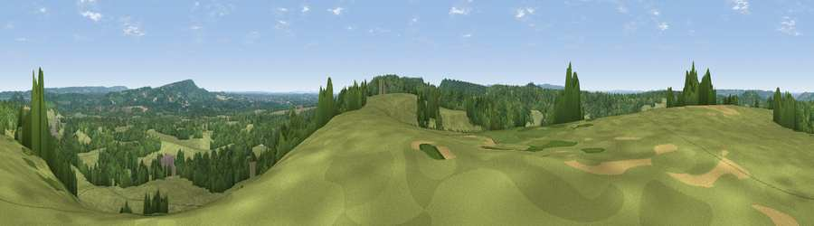

Viewpoint near Grafham
#33122 in England · top 28% of its area beats it · near Grafham · access?Where it is
The exact computed spot (TQ 00725 41675). Click the marker for map links.
Public access: no public right of way or access land is recorded at this exact spot — it may be on private land. Computed from Natural England's CRoW access layer and OpenStreetMap rights of way — not the legal definitive map. Always verify locally.
The view, rendered

A 360° render of this exact spot computed from the terrain model, tree cover and land cover — summer colours, afternoon light, calibrated against photographs of famous viewpoints. Real trees, hedges and buildings will differ in detail.
The panorama
Grey silhouette: terrain skyline in each direction (720 bearings, Earth curvature and refraction included). Dashed green: skyline with trees (+15 m) and buildings (+8 m) as obstacles. Blue strip: how far the ground is visible on each bearing.
Where the view opens
Wedge length = distance to the farthest visible ground on that bearing (vegetation-aware). Rings at 10, 25 and 50 km.
What fills the view
55% grassland · 40% woodland · 3% cropland · 1% built-up
Angular shares of the visible panorama (visual magnitude), not map area. Landscape diversity 0.38 (0–1 Shannon).
Key numbers
More beautiful places nearby
The staircase of upgrades: each row has a higher view potential than everything closer. Driving times are estimates from straight-line distance, calibrated against real road routing — check an actual route before setting out.
| Place | Direction | Drive | Score |
|---|---|---|---|
| Viewpoint near Hascombe | S · 2 km | ~5 min | 37.4 |
| Viewpoint near Hascombe | S · 3 km | ~7 min | 59.6 |
| Viewpoint near Hascombe | SSW · 3 km | ~8 min | 60.0 |
| Viewpoint near Hascombe | SW · 4 km | ~9 min | 62.0 |
| Viewpoint near Ewhurst | E · 7 km | ~14 min | 63.9 |
| Pitch Hill | E · 8 km | ~15 min | 64.4 |
| Viewpoint near Holmbury St Mary | E · 10 km | ~19 min | 67.0 |
| Viewpoint near Coldharbour | E · 14 km | ~25 min | 70.0 |
51.16546, -0.56081 · source: screening · position refined by local search. Computed location — check access rights before visiting.